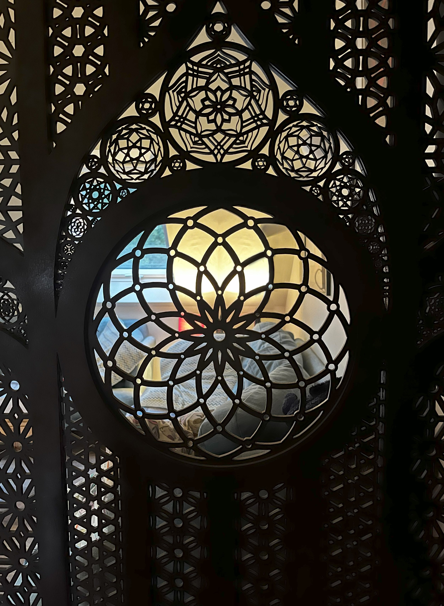
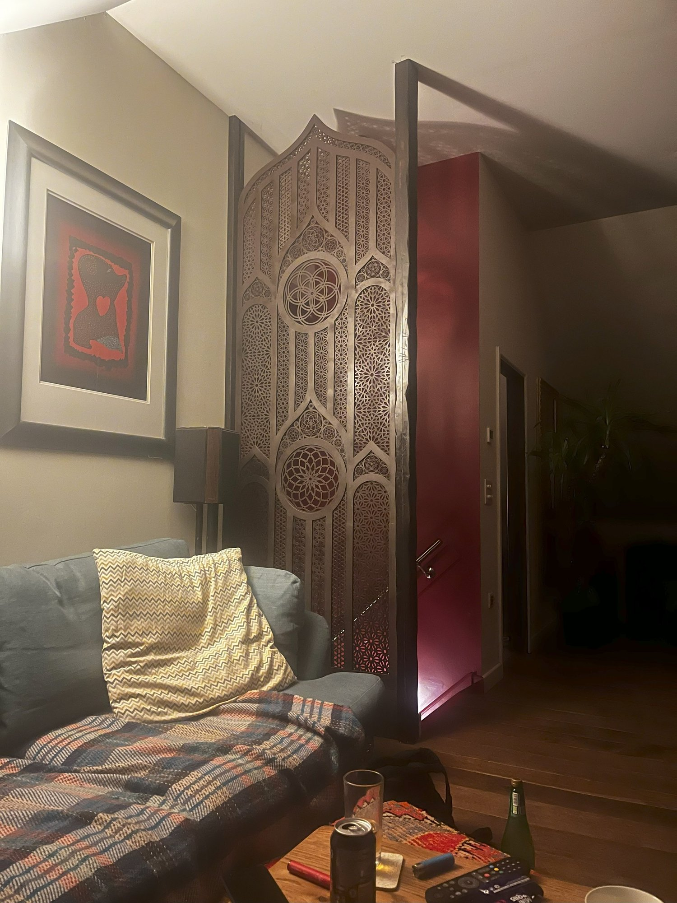
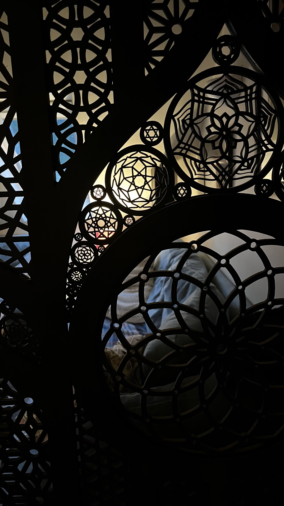
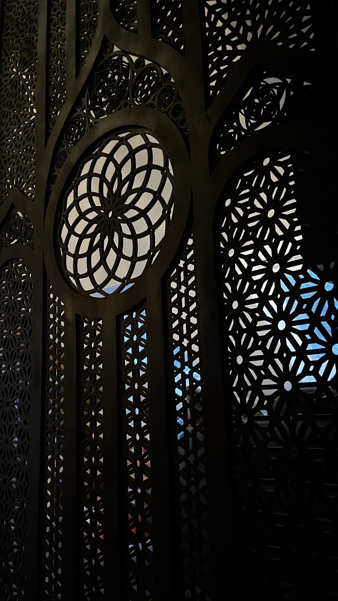
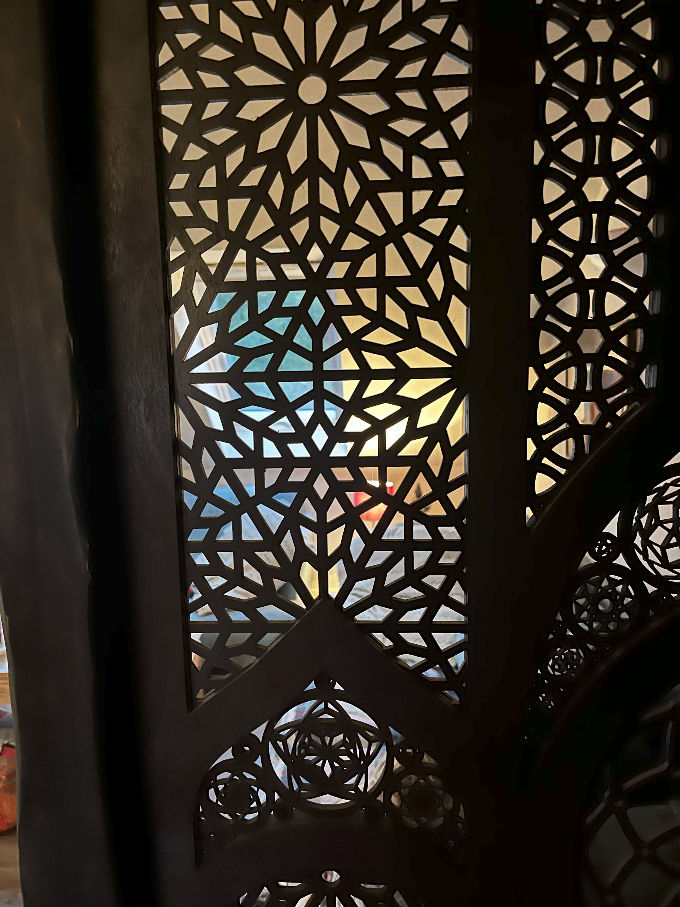
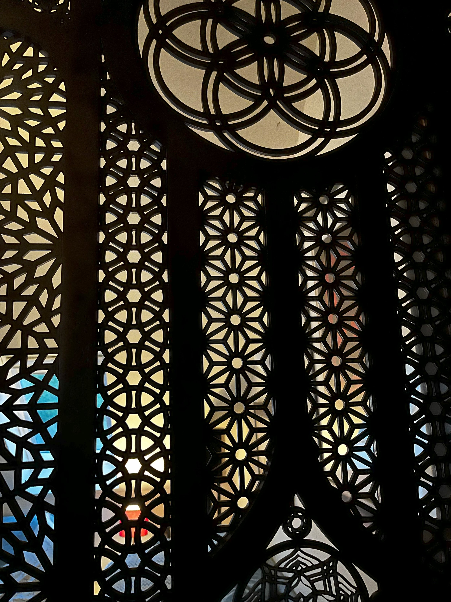

Interior Installations banner options (cropped as the real banner)
 AThe red room: the divider in a real home, casting shadows
AThe red room: the divider in a real home, casting shadows

BThe coloured stained-glass circle

CThe divider in the living room (cropped above the coffee table)

DLayered detail with small mandalas

EThe flower of life window, darker and moodier

FColoured panels behind the lattice (current How It Works photo)

GCurrent banner